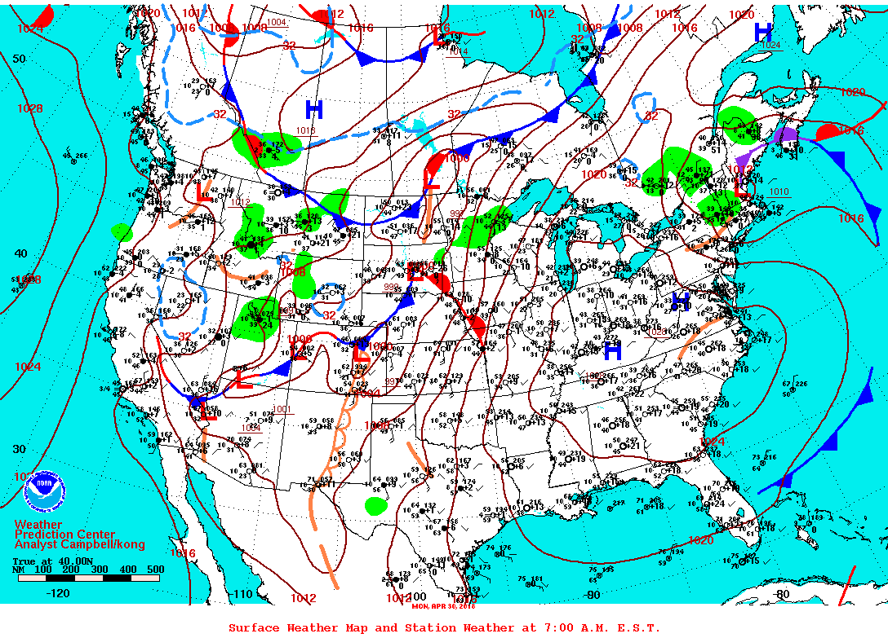

Por qué el viento sopla paralelo a las isobaras
El sentido común dice que el aire debería ir de la alta a la baja presión, como el agua cuesta abajo. Sin embargo, en un mapa del tiempo los vientos de altura no cruzan las isobaras, las líneas de igual presión: corren a lo largo de ellas. Es como si una pelota, en vez de rodar por la ladera, diera vueltas alrededor del cerro.
Sobre el aire actúa la fuerza de presión, que apunta de la alta a la baja presión. Y como la Tierra gira, aparece la fuerza de Coriolis, perpendicular a la velocidad: en el hemisferio norte apunta 90° a la derecha [1]; en el sur, a la izquierda. Por encima de la capa cercana al suelo, la fricción y las aceleraciones son en general despreciables, y esas dos fuerzas se equilibran [1]. Eso se llama equilibrio geostrófico, de «geo» por Tierra y «estrófico» por giro [2].
Para que dos fuerzas se cancelen, tienen que ser opuestas. La de presión apunta hacia la baja presión, así que Coriolis tiene que apuntar hacia la alta. Y como Coriolis es perpendicular a la velocidad, el viento queda en ángulo recto a la diferencia de presión [1]: corre paralelo a las isobaras. La rapidez sale de igualar las dos fuerzas [2]:
Con las isobaras más juntas, el viento es más fuerte [2]. Por ejemplo, con 4 hectopascales cada 300 kilómetros a 40° de latitud y una densidad de 1,2 kg/m³, el viento geostrófico da unos 12 m/s, más de 40 km/h (un cálculo propio). Un dato práctico de los mapas: la baja presión queda a la izquierda del viento en el hemisferio norte [2], y por lo tanto a la derecha en el sur.
La pelota en la calesita: desde una calesita que gira, una pelota lanzada en línea recta parece curvarse, porque la calesita se mueve debajo de ella. El aire empieza a moverse hacia la baja presión y se va curvando, hasta que corre de costado. Ahí las dos fuerzas se cancelan y deja de curvarse.
El número de Rossby, el cociente entre la aceleración y la fuerza de Coriolis, mide qué tan geostrófico es un flujo [2]. En la forma habitual, Ro = U/(f L), con una velocidad U y un tamaño L. Si es mucho menor que 1, manda la rotación [1].
Para un sistema del tiempo de 1000 kilómetros con viento de 10 m/s y f = 10⁻⁴ s⁻¹, Ro = 0,1. Para el agua de una bañera, con 0,1 m/s y medio metro, Ro = 2000 (cálculos propios). Por eso, Coriolis no decide cómo gira el agua de tu inodoro: la rotación de la Tierra es demasiado lenta para algo tan chico y tan breve.
La aproximación funciona muy bien lejos de la superficie y fuera del ecuador, donde f = 0 [2].
Cerca del suelo, en el kilómetro o dos más bajos de la atmósfera, la fricción importa [3]. Actúa en sentido opuesto al movimiento del aire [3] y lo frena. Con menos velocidad, Coriolis es más débil y ya no equilibra a la presión: el viento se desvía hacia la baja presión y cruza las isobaras [3]. Eso permite que el aire entre a una baja y suba, lo que da lluvia.
En el ecuador, Coriolis se anula. Por eso, los huracanes nunca se forman a menos de unos 3° del ecuador: no hay suficiente proyección de la rotación terrestre sobre la vertical local para sostener una tormenta que gire [4].
Una aproximación, no una ley: si el flujo fuera exactamente geostrófico, no habría cambios: el aire correría paralelo a las isobaras para siempre, sin llenar las bajas. Lo interesante del tiempo está en las pequeñas diferencias respecto de ese equilibrio (un comentario propio). Aun así, el viento de altura se puede estimar casi solo con un mapa de presiones.

En gran escala, lejos del suelo, la fuerza de presión y la de Coriolis se equilibran, y el viento corre paralelo a las isobaras, más rápido donde están más juntas. El número de Rossby indica cuándo vale ese equilibrio: sirve para los sistemas del tiempo y no para una bañera. Cerca del suelo, la fricción rompe el equilibrio y deja pasar al aire hacia la baja presión.
Pregunta para la comunidad: Parado en el hemisferio sur, con el viento en la espalda, ¿de qué lado te queda la baja presión? ¿Cómo cambiaría la respuesta cerca del suelo, donde el viento cruza las isobaras?